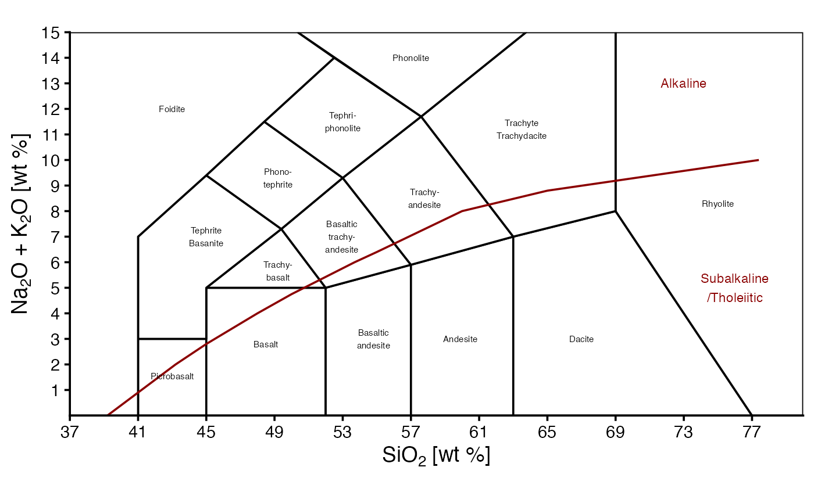
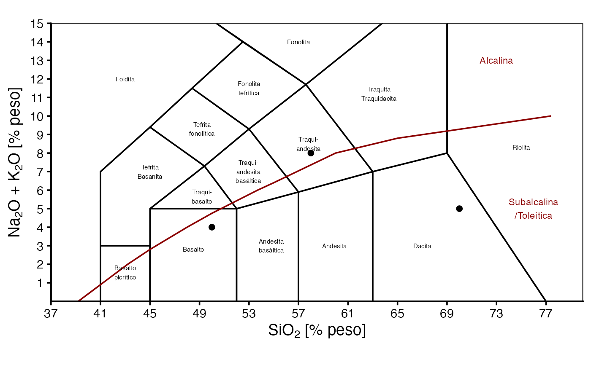
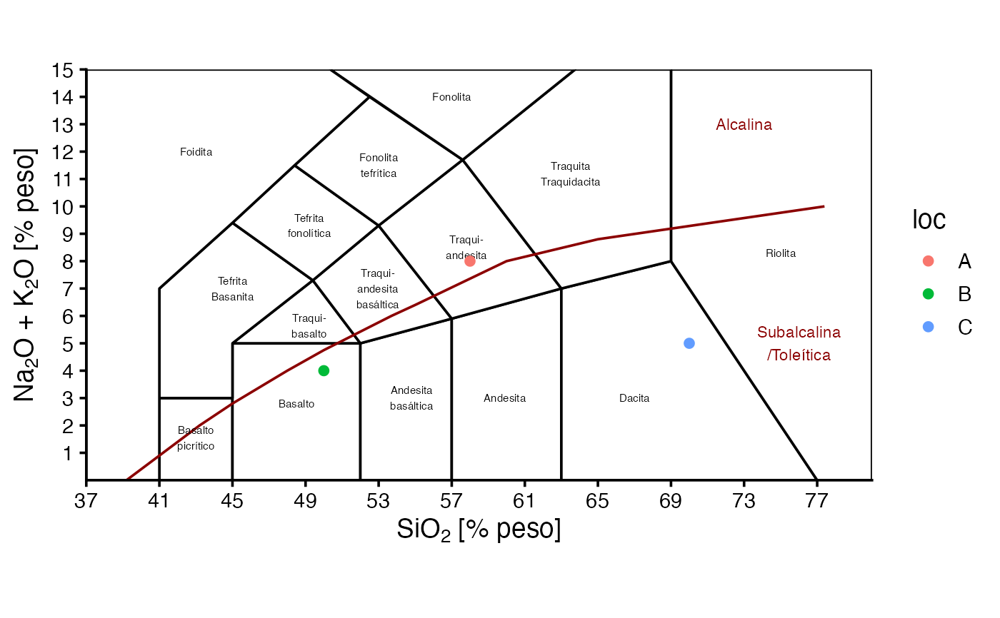

TAS() draws either a static or interactive diagram, in english or spanish. It is a base diagram where data can be plotted.
Details
The examples show basic usage and how to add data, which can be more customizable. In general, just map the silica content to the x-axis and alkali content to the y-axis.
For a more complete description on how to use this function and similar ones, see
vignette("classification_diagrams_vig")
See also
Other classification plots, petrology:
ternary_afm(),
ternary_dickinson_qmflt(),
ternary_dickinson_qtfl(),
ternary_fap(),
ternary_feldspars(),
ternary_folk_gsm(),
ternary_folk_qfl(),
ternary_folk_qfm(),
ternary_folk_smc(),
ternary_pyroclastic_size(),
ternary_pyroclastic_type(),
ternary_qap(),
ternary_qap_g(),
ternary_qap_m_hbl(),
ternary_qap_m_ol(),
ternary_qap_um(),
ternary_qap_um_hbl()
Examples
library(ggplot2)
library(plotly)
#>
#> Attaching package: ‘plotly’
#> The following object is masked from ‘package:ggplot2’:
#>
#> last_plot
#> The following object is masked from ‘package:stats’:
#>
#> filter
#> The following object is masked from ‘package:graphics’:
#>
#> layout
d = data.frame(
silica=c(58,50,70),
alkali=c(8,4,5),
loc=c("A", "B", "C")
)
TAS()

TAS('plotly')
# adding data to ggplot object
TAS(language = 'es') +
geom_point(aes(x=silica, y=alkali), data=d)

TAS(language = 'es') +
geom_point(aes(x=silica, y=alkali, color=loc), data=d)

# adding data to plotly object
TAS('plotly') %>%
add_markers(x=~silica, y=~alkali,
data = d,
name = "My data",
marker = list(size=8,color='orange',
symbol=3,opacity=.9)) %>%
layout(showlegend = TRUE)
# adding data to plotly object with custom colors
my_pal <- c("A" = "red", "B" = "blue", "C" = "green")
my_shapes <- c("A" = "circle", "B" = "square", "C" = "diamond")
TAS('plotly') %>%
add_markers(x=~silica, y=~alkali,
data = d,
split = ~loc,
marker = list(size=8,
color = ~my_pal[loc],
symbol = ~my_shapes[loc],
opacity=.9))